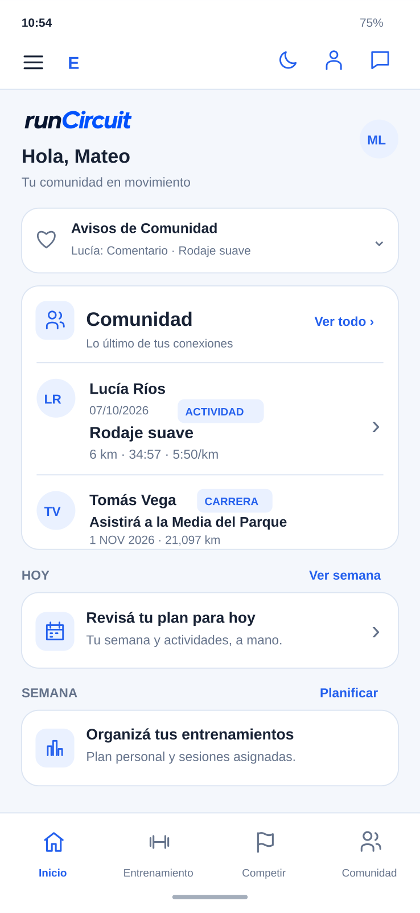
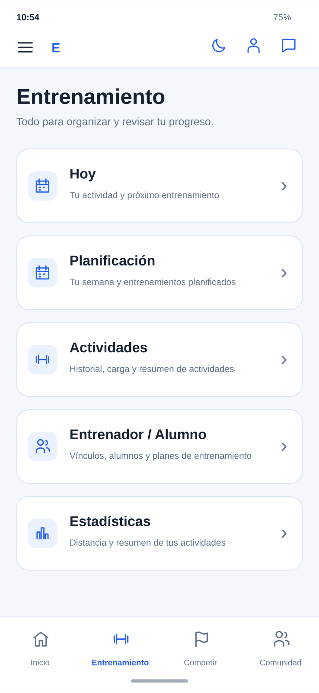
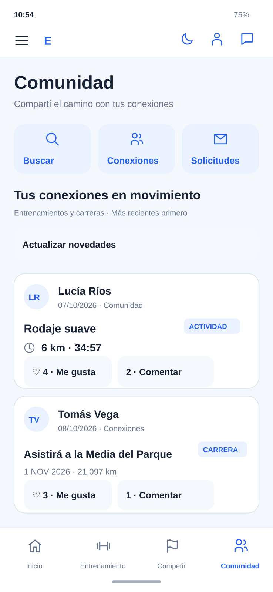
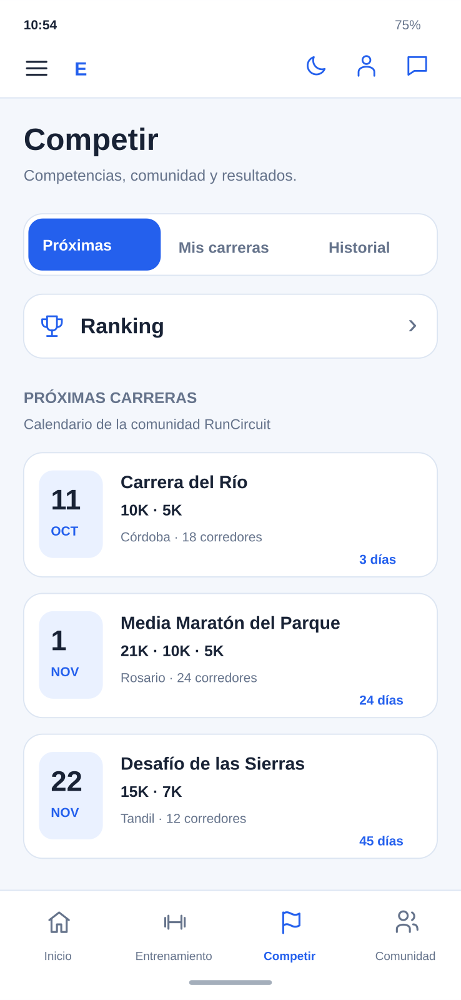
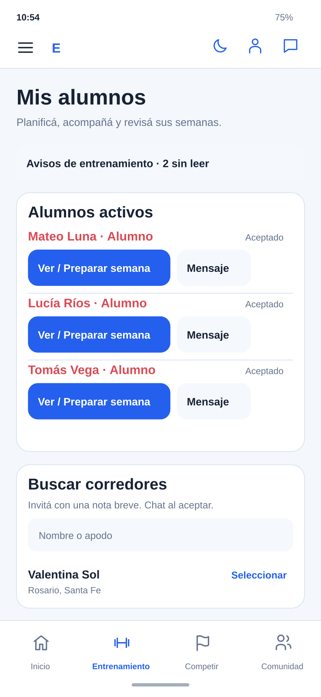
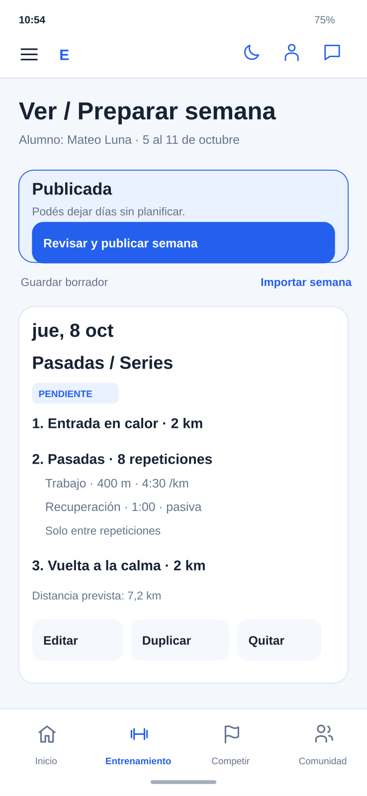
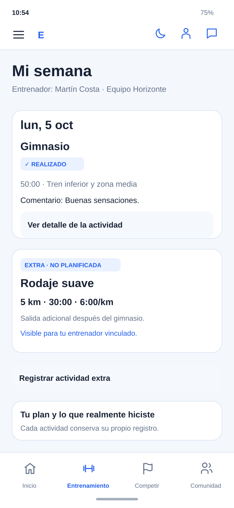
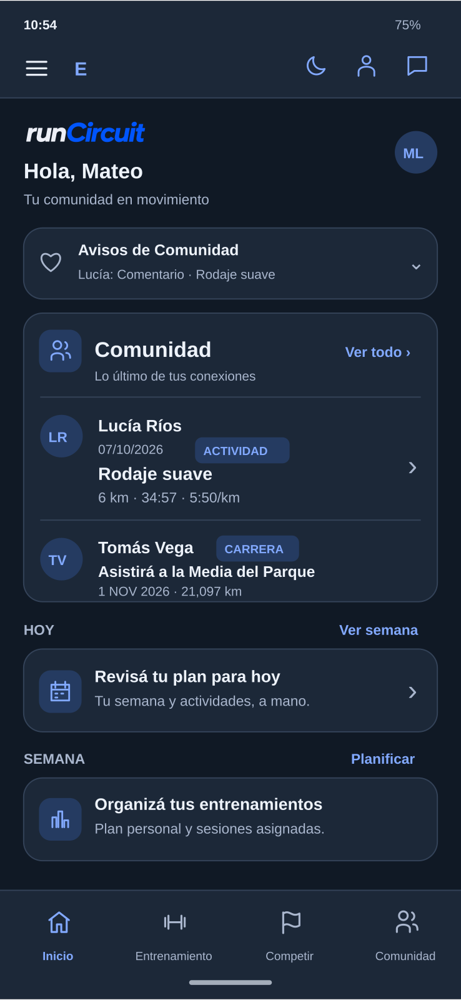

Calendario de carreras
Descubrí próximas competencias, distancias y toda la información en un mismo lugar.
RunCircuit es la app para corredores que reúne planes semanales, carreras, resultados, mensajes y una comunidad que comparte tu pasión por correr.

VISTA ILUSTRATIVA · DATOS DE EJEMPLODescubrí próximas competencias, distancias y toda la información en un mismo lugar.
Compará tus resultados por distancia, categoría, sexo y ubicación.
Encontrá corredores y conectá. Compartí actividades y carreras, participá con Me gusta, comentarios y respuestas.
Registrá entrenamientos, carreras, récords y seguí tu evolución.
Inicio, Entrenamiento, Competir y Comunidad: cuatro espacios para acompañar tu running, en modo claro y oscuro.
Organizá las sesiones con distancias, ritmos y recuperaciones. Como entrenador, importá semanas para reutilizarlas y publicalas aunque haya días sin planificar. Como alumno, registrá lo realizado y agregá actividades extra.
Explorá las pantallas →Combiná tu entrenamiento personal con el panel de alumnos. Como alumno, vinculáte con un entrenador para recibir planes. El entrenador ve automáticamente los resultados de las sesiones asignadas y las actividades extra que registrás desde tu semana.
El acceso de entrenador requiere habilitación. Recibir planes como alumno no requiere Plus.
Conversá en privado con tus conexiones aceptadas. En Comunidad encontrá actividades y carreras, comentá, respondé y acompañá con Me gusta.
Conocé la comunidad →RunCircuit también tiene modo oscuro. Alterná entre los dos estilos desde el ícono de la barra superior.
Descubrí el modo oscuro →Para correr por tu cuenta o entrenar en equipo. Vistas ilustrativas recreadas a partir de RunCircuit 0.7.4, con nombres, competencias y datos ficticios.
Deslizá para explorar · Tocá una pantalla para ampliarla
Tus conexiones, el plan de hoy y tu semana desde Inicio.

Planificación, actividades, estadísticas y entrenador en un lugar.

Actividades y carreras, Me gusta, comentarios y conexiones.

Descubrí carreras, registrá resultados y consultá el ranking.

Semanas, resultados y mensajes desde el panel del entrenador.

Entrada en calor, pasadas y recuperaciones. Importá semanas para reutilizarlas.

Registrá lo que hiciste de más, sin modificar la sesión asignada.

Una presentación coherente para ambos temas de la app.
El calendario de la comunidad reúne competencias para que puedas descubrir qué correr y dónde.
Competencias ficticias que ilustran parte del calendario de RunCircuit.
Próximamente este calendario se actualizará automáticamente con las carreras publicadas por la comunidad RunCircuit.
Compará tus resultados con otros corredores por distancia y categoría.
Ejemplo ilustrativo · corredores ficticios
Buscá por nombre, ciudad o club a corredores que forman parte de RunCircuit.
Generá conexiones, conversá por mensajes privados y construí tu comunidad de running.
Explorá perfiles, carreras y la actividad competitiva de otros corredores.
RunCircuit también te ayuda a registrar y organizar tu propia actividad como corredor.
Registrá rodajes, pasadas, bloques, fondos y otras actividades.
Conservá tus resultados y competencias en un único historial.
Seguí tus mejores marcas en las principales distancias.
Visualizá tu evolución y mantené tus objetivos siempre presentes.
RunCircuit nace con una idea simple: reunir en un mismo lugar las carreras, los resultados, los rankings y la comunidad que forma parte del running.
Una plataforma creada en Argentina para corredores, con la mirada puesta en seguir creciendo.
Conocé la versión 0.7.4 y ayudanos a seguir construyendo una mejor comunidad para corredores.